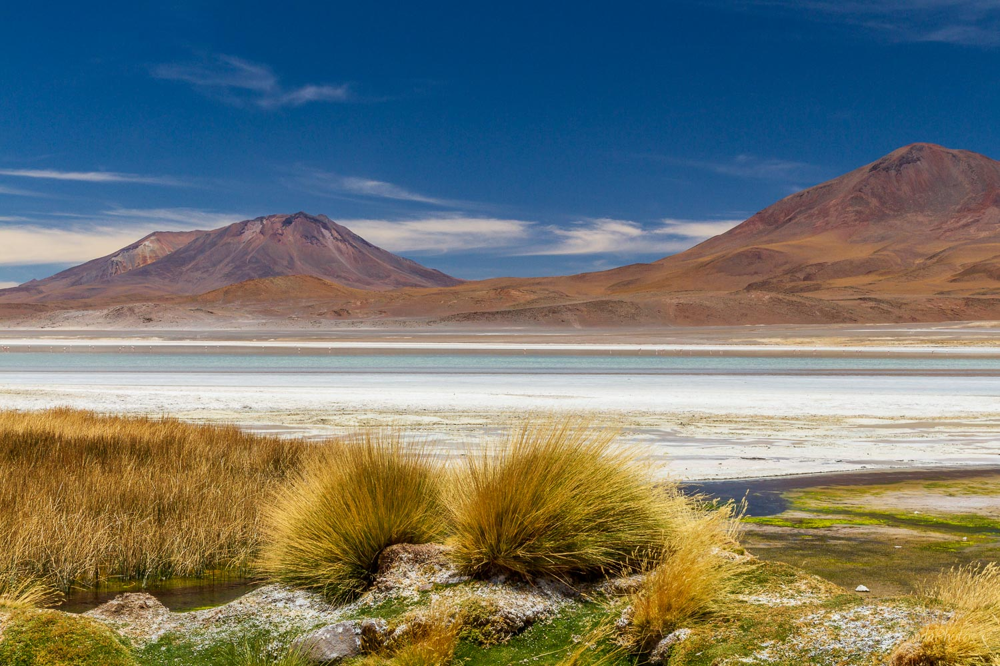

.png)
Nuestro viaje a Bolivia
Erasmus – la Bolivia
Bolivia es un país de América Latina, encontramos en Bolivia paisajes montañosos, pero también paisajes de planos, con el Altiplano.
Podemos ver lagunas, volcanes y cañones. En la región de Oriente, al noreste, un paisaje de llanura conduce a la selva amazónica, en la frontera con Brasil.
Qué visitar a Bolivia ?
LA PAZ
Capital del país, nicho en un cañón al pie de los Andes. Podemos ver los mercados tradicionales. Luego el Mirador Killi Killi en las alturas de la ciudad, da una panorámica de la Paz. Además podemos ir a la Cordillera Royale, una cordillera majestuosa que pasa por alto de la ciudad y propone caminos de senderismo.
EL LAGO TITICACA
Este lago considerado como el lago navegable el más alto del mundo es un lugar mítico. Los Incas y los Tiwanaku habrían nacido aquí. Una belleza increíble adorna este lago, aguas claras y la hermosa luz que se refleja en el agua.
EL PARQUE NACIONAL SAJAMA
Al sudo del lago Titicaca podemos encontrar este parque que fue el primero del país, alberga el más alto volcán del país y muchos tesoros naturales como géiseres o pequeños pueblos tradicionales.
EL DESIERTO SALAR D’UYUNI
El mayor desierto del planeta es un lugar emblemático de Bolivia. De los extensos blancos a casi 4000 metros de altitud ofrece un espectáculo extraordinario. En esta región se pueden encontrar géiseres, volcanes, lagunas y poblados pintorescos. Esta isla apodada Inca Huasi, donde se pueden encontrar cactus gigantes ofrece un panorama con vistas al volcán Tunupa.
EL LÍPEZ Y LA RUTA DE LAS JOYAS
Esta región esconde muchos meravellós como volcán, montañas de colores y lagunas. Después podemos ver tres tipos de flamencos.
POTOSÍ
Esta ciudad alberga un fuerte patrimonio. Esta riqueza pasada que viene de la época de la colonia española emana de la explotación de la moyar mina de plata del mundo. Fue entonces el escenario de la explotación de los indios y los esclavos del comercio triangular enriqueciendo la corona española. Ahora se pueden visitar los edificios coloniales y religiosos , las minas de Tain, los visitantes pasan a menudo al paseo de los mineros.
SUCRE
Esta ciudad es la capital constitucional del país y donde se desenrollaba la revolución, tomó el nombre de la Casa de la Libertad en 1825. Esta ciudad blanca esconde un patrimonio colonial muy importante que permitió a la ciudad su inscripción al UNESCO.
EL PARQUE DE TORONTO
El parque fue creado en 1989 para proteger al guacamayo de frente roja, una especie de loro en peligro de extinción, este parque alberga paisajes magníficos. Tiene una hermosa vista de las coloridas montañas medias y es el hábitat natural de muchos animales, como el puma y el gato andino. Una de las especificidades de este parque es que conserva huellas y fósiles de dinosaurios, lo que lo convierte en un lugar privilegiado para paleontólogos de todo el mundo.
SANTA CRUZ Y LAS MISIONES JESUITAS
Santa Cruz, región amazónica basada en misiones jesuitas, hoy están inscritas en su conjunto como patrimonio mundial de la humanidad. Fueron los jesuitas quienes les transmitieron sus conocimientos, la música, la arquitectura. Después, hay el parque Amboró, en la selva amazónica entre río, cascades, la belleza de la vegetación densa y tropical.
Porqué ir a Bolivia ?
Fuimos a este país porque tiene una cultura diferente de los otros países de AmericaLatina, por sus paisajes y lugares muy bellos. Luego podemos visitar muchos sitios históricos como el parque de Toronto donde vemos huellas y fósiles de dinosaurios o la capital constitucional, Sucre.
Gracias a este viaje hemos ganado beneficios personales. Este viaje permite ver las cosas en los ojos de los locales, luego permite un descubrimiento de uno mismo, ademas pudimos compartir con los habitantes y aprender de los otros. En Bolivia la cultura es muy rica. Entonces fue un viaje muy enriquecedor tan culturalmente que personalmente.
Tuvimos con la gente del país muy bonitas relacionas, pudimos hablar de nuestras experiencias , compartir momentos de vida con ellos. Nos permitieron ver lugares que están muy lejos de las ciudades y no conocidas del mundo. Estas gentes permitieron también nuestro descubrimiento de uno mismo..
Para viajar con Erasmus, no solo a Bolivia nos recomendamos que empieces a socializarte con los locales antes de salir por vía de las redes sociales y los grupos de internet. Además nos aconsejamos que compartas tus experiencias con locales porque puedes aprender muchos de los habitantes. Entonces, animate a socializarte hacer este viaje, salir de la rutina, hacerte amigos y socializar con locales. Por fin nos recomendamos que haga este viaje porque fue una experiencia muy enriquecedora y recordada toda tu vida.